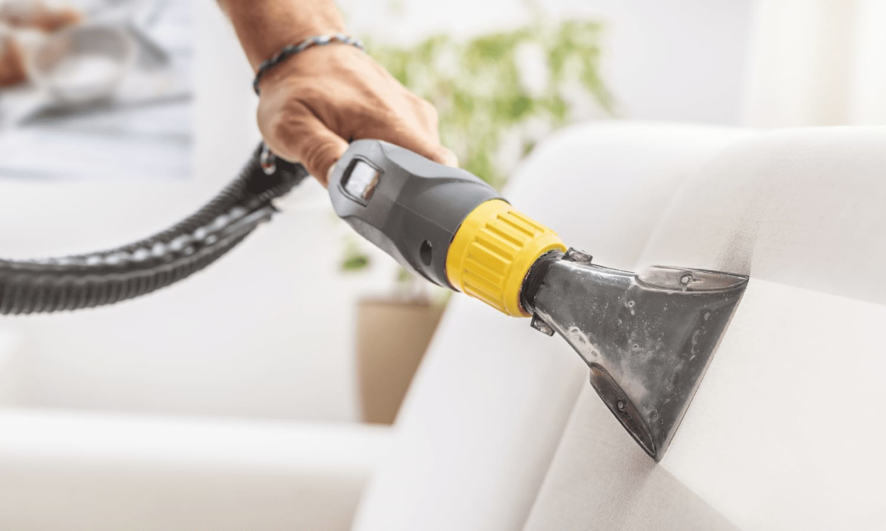
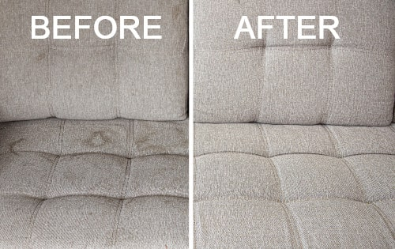
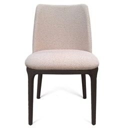
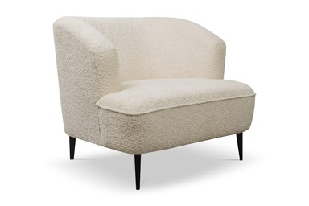
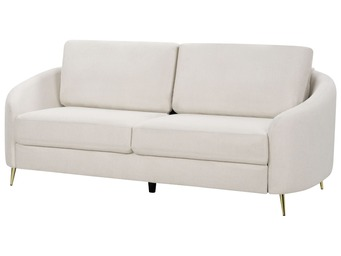
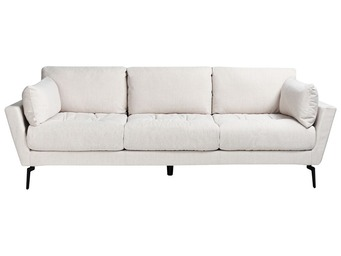
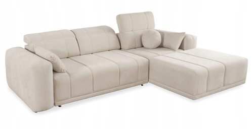
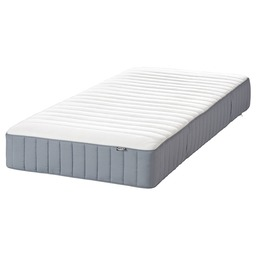
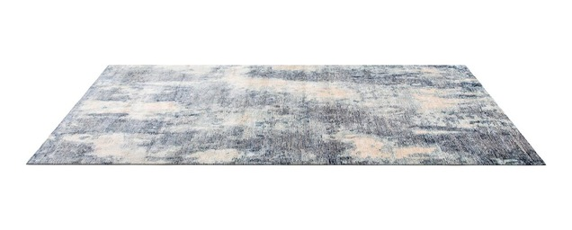
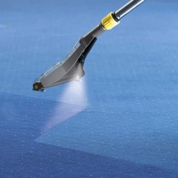

Nasza firma Tenerife North Cleaning Service jest polskim zespołem, który oferuje spersonalizowane usługi w sprzątaniu wakacyjnym, komercyjnym, zarządzaniu nieruchomościami jak i praniem tapicerek. Posiadamy dużą wiedzę w zakresie utrzymania czystości i zachęcającego wyglądu Twojego mieszkania. Dbamy o to, żeby nasi klienci byli zadowoleni z naszych usług.
Pomysł na założenie firmy powstał jeszcze na Islandii, gdzie zebraliśmy lata doświadczenia w tym zakresie. Wiemy, że wysoka jakość usług i profesjonalizm jest oczekiwana przez klientów, więc stanowi ona nasz główny cel.
Do każdego klienta podchodzimy indywidualnie. Twoja satysfakcja jest naszym priorytetem.
Usługi
Opłaty za sprzątanie apartamentu:
z 1 sypialnią – 65 EUR
z 2 sypialniami – 89 EUR
z 3 sypialniami – 109 EUR
*Cena obejmuje sprzątanie oraz pranie pościeli (prześcieradło płaskie, prześcieradło z gumką, poszewki na poduszki), ręczników kąpielowych, ściereczek kuchennych, ręczników do rąk, dywaników łazienkowych.
Sprzątanie willi: wycena indywidualna
Pakiet powitalny (na życzenie właściciela): 10 EUR (zakup wina, wody, kawy, herbaty, papieru toaletowego, worków na śmieci)
Jeśli posiadasz mieszkanie, dom czy biuro, jesteśmy zaufaną firmą z doświadczeniem, która utrzyma Twoją nieruchomość w czystości. Oferujemy usługę jednorazowego sprzątania lub cyklicznego aby utrzymać Twój dom cały czas w czystości i świeżości.
Dodatkowo oferujemy możliwość zamówienia głębokiego czyszczenia np. gdy potrzebujesz dokładniejszego sprzątania niż zwykle. Usuniemy brud z każdego zakątka Twojej posesji i trudno dostępnych miejsc.
Ceny są ustalane indywidualnie w zależności od zamawianej usługi. Można z Nami skontaktować się przez formularz na stronie, Facebook lub WhatsApp.
Współpracujemy z doświadczonymi fachowcami, którzy szybko i skutecznie potrafią rozwiązać wszelkie problemy zaistniałe w wynajmowanej nieruchomości, aby wszystko działało w 100%.
Jeśli masz nieruchomość na północy Teneryfy i chciałbyś w pełni ją wykorzystać dodatkowo oferujemy usługę zarządzania apartamentów wakacyjnych posiadających licencję Vivienda Vacacional.
Pobieramy 15% zysku z wynajmowanych apartamentów (po uwzględnieniu innych opłat i kosztów). Koszt sprzątania apartamentów, pościeli, ręczników i konserwacja jest dodatkowy. Wystawiamy szczegółowe faktury za wykonane przez nas usługi, aby zapewnić pełną przejrzystość.
Chcemy zapewnić właścicielom nieruchomości komfort i gwarancję, żeby nie musieli się o nic martwić, a nasze zadania obejmują:
Zarządzanie rezerwacjami
Obsługa portali typu Booking.com, Airbnb
Marketing na innych platformach, komunikacja z gośćmi
Analizy w celu poprawy rentowności
Obsługa fotograficzna do promocji pod wynajem wakacyjny
Nasz profesjonalny zespół wykorzystuje najlepsze techniki, żeby przywrócić tapicerkom ich dawną świeżość. Niezależnie od tego czy masz do czynienia z ogólnym zużyciem, uporczywymi plamami czy po prostu nieprzyjemnymi zapachami – nasze usługi są rozwiązaniem którego szukałeś. Pozwól nam zadbać o swoją tapicerkę żebyś mógł się cieszyć odnowioną przestrzenią, dzięki pracy Tenerife North cleaning service. Jeśli na Twojej sofie, materacu, krześle, fotelu, dywanie czy tapicerce łodzi lub jachtu pojawi się zabrudzenie, nie wahaj się – skontaktuj się z Nami.
Czyścimy metodą ekstrakcji, która pozwala pozbyć się nawet najbardziej uciążliwych zabrudzeń, a także roztoczy i alergenów.


Cennik:

Krzesło – od 5 do 15 EUR

Fotel – od 35 EUR

Sofa dwuosobowa – od 49 EUR

Sofa trzyosobowa – od 59 EUR

Sofa narożna w kształcie L – od 69 EUR

Materac – od 35 EUR

Dywany – cena do uzgodnienia (w zależności od wielkości)

Tapicerka łodzi i jachtów – cena do uzgodnienia (zależnie od wymiarów)
Często zadawane pytania
1. W jaki sposób dokonywane są rozliczenia za usługę?
Faktury są wystawiane co miesiąc po wykonanej przez Nas usłudze.
2. Czy zlecając sprzątanie apartamentu muszę zapewnić środki czyszczące i niezbędny sprzęt?
Nie, nasza firma posiada wszystkie środki czystości oraz sprzęt.
Jeśli chcesz uzyskać więcej informacji, skontaktuj się z nami. Znajdujemy się na północy Teneryfy.
Kontakt
Informacje kontaktowe
Jeśli masz do nas jakiekolwiek dodatkowe pytania, potrzebujesz wyceny indywidualnej lub chcesz skorzystać z naszych usług, możesz napisać do nas jedną z poniższych dróg komunikacji lub skorzystać z naszego formularza kontakowego.